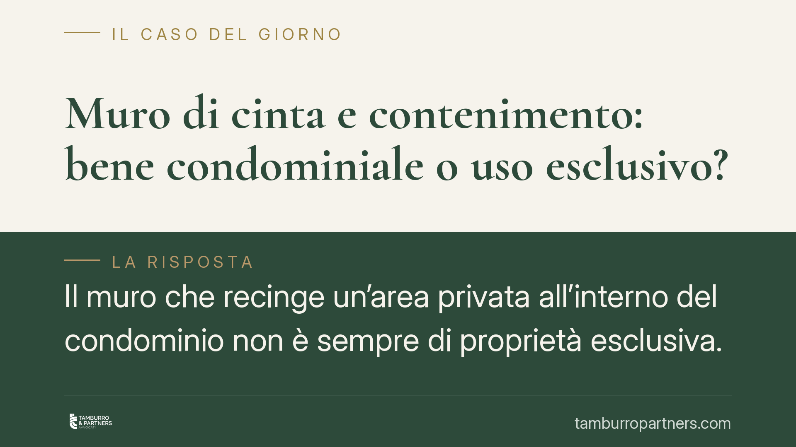

Muro di cinta e contenimento: bene condominiale o uso esclusivo?
Il muro che recinge un'area privata all'interno del condominio non è sempre di proprietà esclusiva. Quando svolge una funzione di contenimento o garantisce la stabilità dell'edificio, la giurisprudenza lo considera parte comune. Chi anticipa lavori urgenti può avere diritto al rimborso, in presenza dei presupposti dell'art. 1134 c.c. Vediamo come distinguere e cosa fare.

Il caso e la questione
Un muro perimetrale delimita un'area che un singolo condomino utilizza in via esclusiva. Il muro si degrada e serve un intervento. A chi tocca pagare? È un bene privato di chi gode dell'area, oppure è parte comune dell'edificio?
La risposta non dipende da chi usa l'area recintata, ma dalla funzione che il muro svolge. È il punto decisivo, spesso frainteso in assemblea.
Inquadramento normativo
L'art. 1117 cod. civ. elenca le parti dell'edificio presunte comuni. Tra queste figurano espressamente i muri maestri, cioè gli elementi strutturali portanti. Il muro di cinta in quanto tale non compare nell'elenco letterale: vi rientra, secondo l'orientamento consolidato della Corte di Cassazione, in via interpretativa, quando la sua funzione va oltre la mera recinzione.
La distinzione è netta:
- il muro di mera recinzione, che si limita a delimitare un'area senza incidere sulla statica, segue la proprietà del suolo o dell'area che separa;
- il muro di contenimento o portante, che sostiene terrapieni, dislivelli o concorre alla stabilità dell'edificio, è assimilato ai muri maestri e si presume comune ex art. 1117 cod. civ., anche se recinge un'area in godimento esclusivo.
In altre parole, è la funzione di contenimento e di garanzia della stabilità strutturale a trasformare il muro in bene condominiale. L'uso esclusivo dell'area retrostante non sposta la proprietà del manufatto.
Implicazioni pratiche
Se il muro è condominiale, la sua manutenzione grava sul condominio secondo i criteri dell'art. 1123 cod. civ.: le spese per la conservazione delle parti comuni si ripartiscono tra i condomini in proporzione al valore delle rispettive proprietà, salvo diverso criterio legittimamente adottato.
Questo significa che il condomino che gode dell'area recintata non è l'unico obbligato a sostenere i costi del muro di contenimento. E, specularmente, l'amministratore non può addebitare l'intervento al solo utilizzatore dell'area come se si trattasse di un bene privato.
Resta aperto il tema dei lavori urgenti. L'art. 1134 cod. civ. consente al condomino che ha anticipato spese per le parti comuni di ottenerne il rimborso, ma solo in presenza di urgenza qualificata: l'intervento deve essere tale da non poter attendere la delibera assembleare senza pregiudizio. Non si tratta di un automatismo. Chi agisce di propria iniziativa senza che ricorra questa condizione rischia di restare privo di rimborso.
Per questo, prima di affrontare una spesa, conviene documentare con precisione sia la natura del muro, sia l'eventuale urgenza dell'intervento.
Cosa fare in concreto
- Verificate la funzione del muro prima di qualsiasi decisione: fate accertare da un tecnico se si tratta di mera recinzione o di elemento con funzione di contenimento o portante. È questo dato a stabilire la proprietà.
- Documentate lo stato dei luoghi con rilievi fotografici e, se necessario, una relazione tecnica che attesti il rischio per la stabilità o l'incolumità.
- Portate la questione in assemblea quando i tempi lo consentono: la delibera legittima la spesa e ne definisce la ripartizione ex art. 1123 cod. civ.
- Invocate l'art. 1134 cod. civ. solo in caso di reale urgenza: conservate la prova che l'intervento non poteva attendere, perché il rimborso è subordinato a questo presupposto.
- Chiarite i criteri di riparto in anticipo, evitando di addebitare al solo utilizzatore dell'area un costo che la legge pone a carico della collettività condominiale.
Una nota di metodo
Le controversie su questi muri nascono quasi sempre da un equivoco: confondere il godimento esclusivo di un'area con la proprietà esclusiva di ciò che la delimita. Sono due piani diversi. Tenerli distinti, fin dalla prima riunione, evita contenziosi lunghi e costosi.
---
Contributo informativo a cura di Tamburro & Partners Avvocati - Avv. Giuseppe Tamburro. Non costituisce parere legale.
Ogni condominio ha una storia a sé.
Se gestisci un'amministrazione e vuoi un confronto su una specifica questione condominiale, scrivi allo studio. Ti rispondiamo entro un giorno lavorativo.